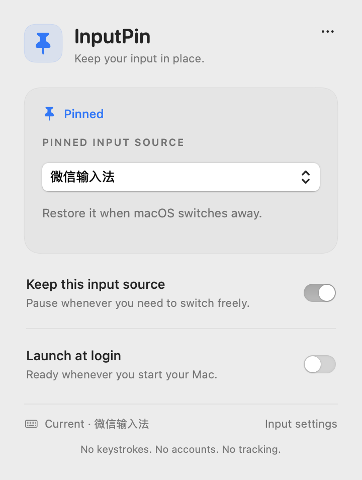

A small utility for a calmer Mac
Your input.
Your choice.
Still yours.
Keep your chosen input source in place, even when macOS has other ideas. A quiet pin in your menu bar. One less interruption.

At home on your Mac.
System materials and controls. Light and dark. A small panel, with nothing asking for your attention.
Your words stay yours.
No keystrokes, accounts or analytics. No Accessibility permission. It only manages your input source.
Knows when to wait.
Secure input takes priority. Pause whenever you need another source. Resume when you're ready.
A little less friction
Choose once.
Keep typing.
- 1
Pick your input source.
WeType, ABC, or any enabled keyboard input source. InputPin doesn't bundle an input method.
- 2
Let the pin do its thing.
When macOS switches away, InputPin restores your choice. Password-related secure input is left alone.
- 3
Change your mind, freely.
Pause to switch sources. Your input method's internal Chinese/English mode stays under its own control.
Make it yours
Small app.
Simple install.
Source installation is available with Homebrew and Xcode 15+. Run open "$(brew --prefix inputpin)/InputPin.app", then look for the pin in your menu bar. A notarized DMG is being prepared.
brew install kaylaoneal/tap/inputpinBuilds on your Mac, via our checksum-verified custom tap.
Open by design
A useful little thing.
Made to be shared.
No subscription. No locked features. MIT-licensed Swift, with the source, tests and release process open for anyone to inspect.
Explore the source